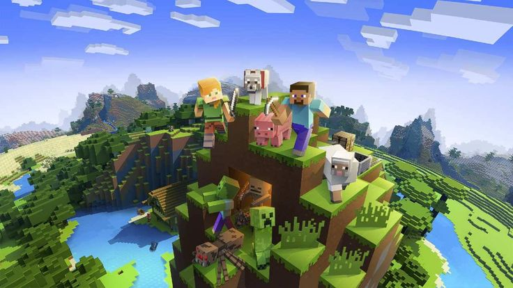
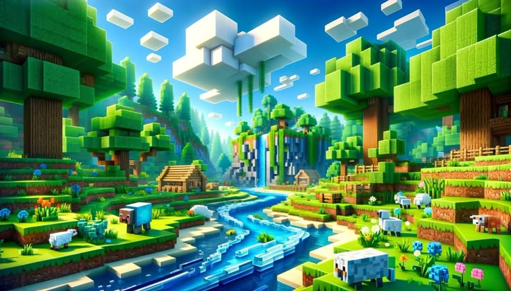
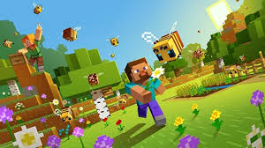
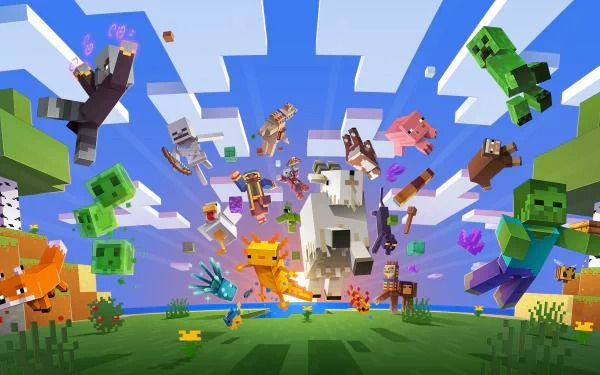
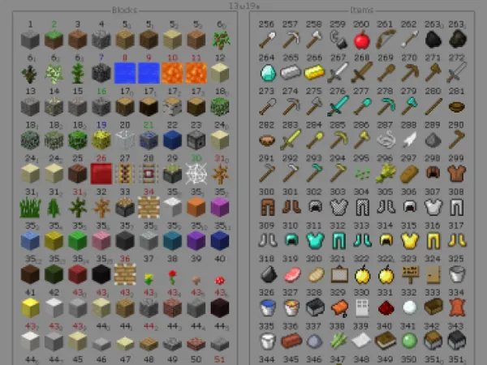

Início
Bem-vindo ao nosso site dedicado ao incrível mundo de Minecraft! Aqui você vai descobrir tudo sobre o jogo, seus modos, criaturas, blocos e itens. Prepare-se para explorar e construir seu próprio universo!
Sobre o Minecraft
Minecraft é um jogo de mundo aberto criado pela Mojang Studios. Nele, os jogadores podem explorar, minerar, construir e sobreviver em um universo feito inteiramente de blocos. É um dos jogos mais populares e criativos do mundo, com infinitas possibilidades.
Modos de jogo
O Minecraft possui vários modos: Sobrevivência, onde você precisa coletar recursos e se proteger dos perigos; Criativo, onde tem acesso ilimitado a blocos e pode construir livremente; Aventura, ideal para mapas personalizados; e o modo Espectador, para apenas observar o mundo.
Criaturas
O mundo de Minecraft é habitado por muitas criaturas. Há animais pacíficos como vacas, ovelhas e galinhas, além de monstros como zumbis, esqueletos e creepers. Cada criatura tem comportamentos e funções únicas dentro do jogo.
Blocos e Itens
Blocos são os elementos básicos do Minecraft. Você pode minerar pedra, construir com madeira ou criar máquinas com redstone. Itens como picaretas, espadas e alimentos ajudam na sobrevivência e exploração do mundo.
